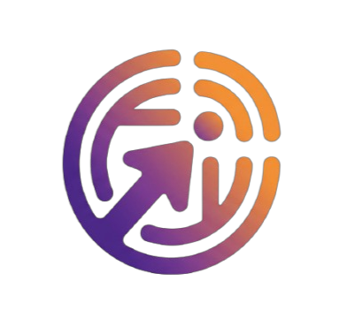

Oficinas de tecnologia
Aulas rápidas e práticas sobre celular, computador, internet segura, currículo digital, aplicativos e estudos online.

PixelTechBomComo funciona
O PixelTechBom une formação prática, espaços de acesso e parcerias para criar continuidade no aprendizado.
Aulas rápidas e práticas sobre celular, computador, internet segura, currículo digital, aplicativos e estudos online.
Locais com equipamentos, conexão e apoio de monitores para que moradores possam praticar e resolver necessidades reais.
Rede de apoio para equipamentos, voluntariado, manutenção, capacitação e encaminhamento para oportunidades.
Do aprendizado à autonomia